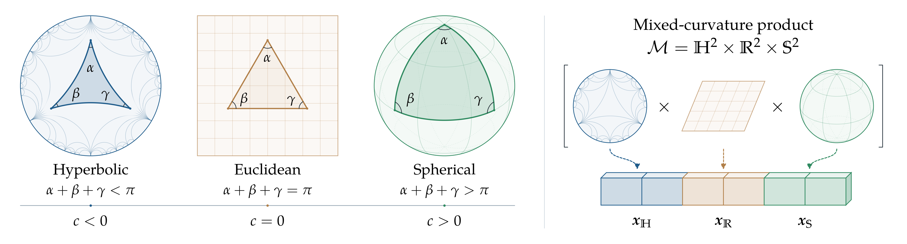

Survey · 2026
From Hyperbolic to Mixed-Curvature Geometric Learning: A Comprehensive Survey
We survey how hyperbolic, spherical, and mixed-curvature spaces shape representation learning, from geometric foundations and neural architectures to foundation models and applications.
Abstract
Euclidean space has long served as the default representation space in machine learning. This choice rests on the implicit assumption that the geometry of the data itself is flat, yet many datasets carry hierarchies, cyclical and directional patterns, or a mixture of these structures. Non-Euclidean geometric learning addresses this limitation by introducing representation spaces whose curvature reflects the underlying structure of the data. In recent years, hyperbolic geometry has attracted substantial attention because its negative curvature and exponentially expanding volume align naturally with hierarchical and scale-free structures. At the same time, spherical geometry serves the complementary case, where positive curvature and a closed, compact structure suit cyclical, directional, and angular data. Mixed-curvature or generalized curvature models combine hyperbolic, spherical, and Euclidean components within a unified framework for representing heterogeneous geometric patterns. In this paper, we present a comprehensive survey of from hyperbolic to mixed-curvature geometric learning. We review their mathematical foundations, geometric operators, neural architectures, learning strategies, and applications spanning natural language processing, computer vision, speech, multimodal learning, knowledge graphs, recommendation, robotics, the sciences, and trustworthiness, covering developments from shallow embeddings to convolutional, recurrent, and graph neural networks, Transformers, and generative models. We trace how geometry now reaches foundation-model pipelines through pretraining, adaptation, retrieval, and analysis. In addition, we examine practical considerations involving numerical stability, optimization cost, geometric model selection, and unified geometric frameworks. We hope this survey offers both an accessible entry point for newcomers and a comprehensive reference for experienced researchers. A continuously updated collection of papers and resources is maintained at https://github.com/marlin-codes/Awesome-Hyperbolic-Representation-and-Deep-Learning/.

Inside the survey
- Foundations. Manifolds, curvature, geometric models, and neural operations.
- Methods. Shallow embeddings, neural architectures, learning strategies, and foundation models.
- Applications. Language, vision, multimodal learning, graphs, recommendation, robotics, scientific learning, and trustworthiness.
- Practice and open questions. Numerical stability, optimization, geometry selection, and unified frameworks.
Citation
Download BibTeX@misc{yang2026hyperbolic,
title = {{From Hyperbolic to Mixed-Curvature Geometric Learning: A Comprehensive Survey}},
author = {Yang, Menglin and Liu, Zihao and Liu, Jiahong and Li, Jindong and
Cao, Linxiao and Zhang, Buze and King, Irwin},
year = {2026},
url = {https://openreview.net/forum?id=cpqHCXXZcr}
}